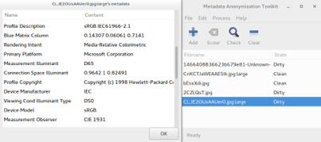

Nel campo dell’ informatica i metadati sono elementi presenti all’ interno dei file,
normalmente non visibili agli occhi dell’ utente finale.I metadati possono dire
molto sulla tua identità e sono rintracciabili in diversi formati:
fotografici, documenti, video etc...
Una delle risorse che ha reso grande l’ informatica è indubbiamente quella delle
immagini. Oggi siamo abituati a diversi formati (JPG, WAV, TIFF e via dicendo)
ognuno dei quali ha le sue peculiarità ed è quindi adatto a diverse situazioni.
Gli EXIF Data sono dei metadati presenti nei formati media che rivelano
informazioni aggiuntive davvero interessanti: è possibile risalire al codice univoco
del dispositivo che ha scattato l’ immagine marca e modello, orario, risoluzione e se
presente persino le coordinate GPS.
Di seguito mostreremo alcuni programmi in grado di permetterci la lettura dei metadati (in particolar modo degli EXIF Data) all’interno dei file
Nel panorama informatico il programma in grado ripulire i Metadati da qualunque
file è MAT: metadata anonymisation toolkit
MAT è in grado di gestire diversi formati ( quiuna lista) ed
è disponibile nelle versioni CLI e più comunemente in versione GUI.
Tale programma permette di inserire in una lista uno o più file,q uindi successivamente
eseguie un fingerprinting dei metadati. Nell'esempio qui sitto vi faro vedere un'esempio su un file
.JPG:

In questo esempio è possibile vedere ben poco rispetto a quanto promesso.
Tuttavia analizzando bene le voci possiamo vedere che sotto Primary Platform
risiede il valore Microsoft Corporation, il che fa intendere che l’utente finale ha
utilizzato un Sistema Operativo Windows. Sotto la voce Device Model troviamo
invece sRGB, il che è strano visto che solitamente lì è presente il modello di una
fotocamera digitale(questo perche la foto è stata ritoccata).
NB:è possibile che, testando immagini provenienti da Internet capiti che i
Metadati non vengano letti.Questo perchè i server per risparmiare banda comprimono i metadati.
Tuttavia considerate sempre che qualunque di questi servizi potrebbe
memorizzare i file originali da voi caricati.
Tuttavia sono presenti anche programmi alternativi in grado di lavorare sui Metadati,di sotto elencati:
Prima di procedere è doverose ricordare che rimuovere i Metadati non è
la soluzione finale;: i file su cui operiamo potrebbero essere manipolati tramite steganografia,
watermarks e altri tipi di metadati non standard. Alcuni programmi permettono solo un analisi
superficiale ad esempio non e possibile modificare valori nei formati PDF.
È possibile inoltre prevenire buona parte dei metadati presenti nei documenti
utilizzando semplici formati testo (i cosiddetti plain-text o più comunemente
conosciuti come .txt).
Se avete già provato alcuni dei programmi già citati avrete visto che alcuni di loro
permettono di modificare alcuni metadati ma a noi non basta! Abbiamo bisogno
di essere sicuri che il lavoro venga fatto maniacalmente,ecco perche vi mostro questi software:
Ovviamente la lista non finisce qui, ce ne sono molti altri come: Batch Purifier Lite, EXIFCleaner, PhotoME e molti altri. N.B:Converti la tua immagine in formato .PNG poichè questo formato non ha il supporto standard agli EXIF Data.